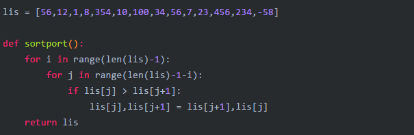
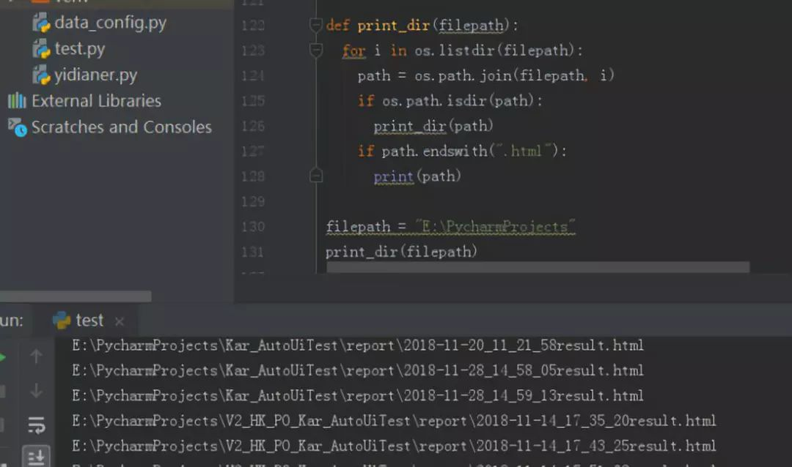

| 目的 | 方法 |
画图 | import matplotlib.pyplot as plt plt.sublot(2,1,1) plt.figure(1) imshow(img) |
Mat文件读取 | import scipy.io as scio img_mask = scio.loadmat(os.path.join(train_data_path2, image_name)+'.mat') |
图片读取 | from skimage.io import imsave, imread img = imread(os.path.join(train_data_path1, image_name)+'.jpg', as_grey=False) |
统计array中nan的个数 | np.isnan(arr).sum() |
发现nan和inf | where_are_nan = np.isnan(a) where_are_inf = np.isinf(a) |
替换成0 | a[where_are_nan] = 0 a[where_are_inf] = 0 |
条件表达式 | min = x if x < y else y |
冒泡算法 |  |
计算x的n次方 |  |
计算a*a + b*b + c*c + …… |  |
计算阶乘 |    |
列出当前目录下的所有文件和目录名 |  |
把一个list中所有的字符串变成小写： |  |
输出某个路径下的所有文件和文件夹的路径 |  |
输出某个路径及其子目录下的所有文件路径 |  |
输出某个路径及其子目录下所有以.html为后缀的文件 |   |
把原字典的键值对颠倒并生产新的字典 |   |
打印九九乘法表 通过指定end参数的值，可以取消在末尾输出回车符，实现不换行。 |  |
替换列表中所有的3为3a |  |
打印每个名字 |  |
合并去重 |  |
随机生成验证码的两种方式 |     |
计算平方根 |  |
判断字符串是否只由数字组成 |   |
判断奇偶数 |   |
判断闰年 |    |
获取最大值 |   |
获取最大值 |   |
斐波那契数列 斐波那契数列指的是这样一个数列 0, 1, 1, 2, 3, 5, 8, 13；特别指出：第0项是0，第1项是第一个1。从第三项开始，每一项都等于前两项之和。 |  |
十进制转二进制、八进制、十六进制 |  |
最大公约数 |  |
最小公倍数 |  |
简单计算器 |  |
生成日历 |  |
文件IO |  |
字符串判断 |  |
字符串大小写转换 |  |
计算每个月天数 |  |
获取昨天的日期 |  |
数据转换为0-255灰度值，然后保存 | from PIL import Image data = data*255 new_im = Image.fromarray(data.astype(np.uint8)) return new_im im = MatrixToImage(im) im.save(os.path.join(str_name_file,mmm)) |